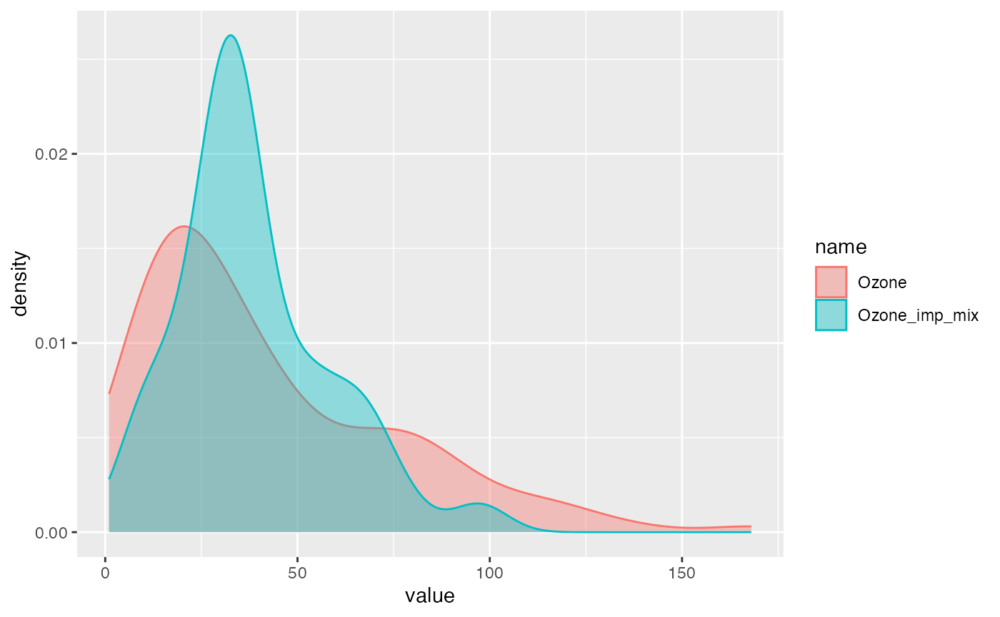

miceFast - Introduction
Maciej Nasinski
2022-03-13
Source:vignettes/miceFast-intro.Rmd
miceFast-intro.RmdLoading the package and setting a seed:
pkgs <- c("miceFast", "mice", "ggplot2", "dplyr", "data.table")
inst <- lapply(pkgs, library, character.only = TRUE)
set.seed(123456)Description
Fast imputations under the object-oriented programming paradigm. There were quantitative models with a closed-form solution. This package is based on linear algebra operations. The biggest improvement in time performance could be achieved for a calculation where a grouping variable has to be used. A single evaluation of a quantitative model for the multiple imputations is another major enhancement. Moreover there are a few functions built to work with popular R packages.
Performance
miceFast was compared1 with the mice package. For the grouping option there was used a basic R looping and popular dplyr/data.table packages. Summing up, miceFast offer a relevant reduction of a calculations time for:
- Linear Discriminant Analysis around (x5)
- where a grouping variable have to be used (around x10 depending on data dimensions and number of groups and even more than x100 although compared to data.table only a few k faster or even the same) because of pre-sorting by grouping variable
- multiple imputations is faster around x(a number of multiple imputations) because the core of a model is evaluated only ones.
- Variance inflation factors (VIF) (x5) because the unnecessary linear regression is not evaluated - we need only inverse of X’X
- Predictive mean matching (PMM) (x3) because of pre-sorting and binary search (
micealgorithm was improved too).
If you are interested about the procedure of testing performance check performance_validity.R file at the extdata folder.
system.file("extdata", "performance_validity.R", package = "miceFast")Additional plots for simulations with certain parameters (but feel free to change them) are located:
system.file("extdata", "images", package = "miceFast")Moreover there are offered a few functions built to work with the popular R packages such as ‘data.table’.
Motivations
Missing data is a common problem. The easiest solution is to delete observations for which a certain variable is missing. However this will somek deteriorate the quality of a project. Another solution will be to use methods such as multiple/regular imputations to fill the missing data. Non missing independent variables could be used to approximate missing observations for a dependent variable. R or Python language are user-friendly for data manipulation but parallely brings slower computations. Languages such as C++ give us an opportunity to boost our applications or projects.
Introduction for data.table/dplyr users - using additional functions from miceFast:
Usage of fill_NA and fill_NA_N functions from miceFast - this functions should be resistant to glitches from an user activity perspective and a data structure.
Data
# airquality dataset with additional variables
data(air_miss)NA structure
upset_NA(air_miss, 6)
Intro: dplyr
# VIF - values bigger than 10 (around) suggest that there might be a collinearity problem.
# VIF is high for Solar.R and x_character which is obvious - x_character is a factor version of numeric Solar.R
air_miss %>%
do(vifs = VIF(.,
posit_y = "Ozone",
posit_x = c(
"Solar.R",
"Wind",
"Temp",
"x_character",
"Day",
"weights",
"groups"
)
)) %>%
unlist()## vifs1 vifs2 vifs3 vifs4 vifs5 vifs6 vifs7
## 24.978996 1.445308 3.077776 42.248792 1.083795 1.100853 2.954588
# IMPUTATIONS
air_miss <- air_miss %>%
# Imputations with a grouping option (models are separately assessed for each group)
# taking into account provided weights
group_by(groups) %>%
do(mutate(., Solar_R_imp = fill_NA(
x = .,
model = "lm_pred",
posit_y = "Solar.R",
posit_x = c("Wind", "Temp", "Intercept"),
w = .[["weights"]]
))) %>%
ungroup() %>%
# Imputations - discrete variable
mutate(x_character_imp = fill_NA(
x = .,
model = "lda",
posit_y = "x_character",
posit_x = c("Wind", "Temp")
)) %>%
# logreg was used because almost log-normal distribution of Ozone
# imputations around mean
mutate(Ozone_imp1 = fill_NA(
x = .,
model = "lm_bayes",
posit_y = "Ozone",
posit_x = c("Intercept"),
logreg = TRUE
)) %>%
# imputations using positions - Intercept, Temp
mutate(Ozone_imp2 = fill_NA(
x = .,
model = "lm_bayes",
posit_y = 1,
posit_x = c(4, 6),
logreg = TRUE
)) %>%
# multiple imputations (average of x30 imputations)
# with a factor independent variable, weights and logreg options
mutate(Ozone_imp3 = fill_NA_N(
x = .,
model = "lm_noise",
posit_y = "Ozone",
posit_x = c("Intercept", "x_character_imp", "Wind", "Temp"),
w = .[["weights"]],
logreg = TRUE,
k = 30
)) %>%
mutate(Ozone_imp4 = fill_NA_N(
x = .,
model = "lm_bayes",
posit_y = "Ozone",
posit_x = c("Intercept", "x_character_imp", "Wind", "Temp"),
w = .[["weights"]],
logreg = TRUE,
k = 30
)) %>%
group_by(groups) %>%
do(mutate(., Ozone_imp5 = fill_NA(
x = .,
model = "lm_pred",
posit_y = "Ozone",
posit_x = c("Intercept", "x_character_imp", "Wind", "Temp"),
w = .[["weights"]],
logreg = TRUE
))) %>%
do(mutate(., Ozone_imp6 = fill_NA_N(
x = .,
model = "pmm",
posit_y = "Ozone",
posit_x = c("Intercept", "x_character_imp", "Wind", "Temp"),
w = .[["weights"]],
logreg = TRUE,
k = 20
))) %>%
ungroup() %>%
# Average of a few methods
mutate(Ozone_imp_mix = rowMeans(select(., starts_with("Ozone_imp")))) %>%
# Protecting against collinearity or low number of observations - across small groups
# Be carful when using a data.table grouping option
# because of lack of protection against collinearity or low number of observations.
# There could be used a tryCatch(fill_NA(...),error=function(e) return(...))
group_by(groups) %>%
do(mutate(., Ozone_chac_imp = tryCatch(fill_NA(
x = .,
model = "lda",
posit_y = "Ozone_chac",
posit_x = c("Intercept", "Month", "Day", "Temp", "x_character_imp"),
w = .[["weights"]]
),
error = function(e) .[["Ozone_chac"]]
))) %>%
ungroup()results - visualization
# Distribution of imputations vs Distribution of initial data
compare_imp(air_miss, origin = "Ozone", target = "Ozone_imp_mix")
# or
compare_imp(air_miss, origin = "Ozone", target = c("Ozone_imp2", "Ozone_imp_mix")) ### Intro: data.table
### Intro: data.table
data(air_miss)
setDT(air_miss)
# VIF - values bigger than 10 (around) suggest that there might be a collinearity problem.
# VIF is high for Solar.R and x_character which is obvious - x_character is a factor version of numeric Solar.R
air_miss[, .(VIF(.SD,
posit_y = "Ozone",
posit_x = c(
"Solar.R",
"Wind",
"Temp",
"x_character",
"Day",
"weights",
"groups"
)
))]## V1
## 1: 24.978996
## 2: 1.445308
## 3: 3.077776
## 4: 42.248792
## 5: 1.083795
## 6: 1.100853
## 7: 2.954588
# IMPUTATIONS
# Imputations with a grouping option (models are separately assessed for each group)
# taking into account provided weights
air_miss[, Solar_R_imp := fill_NA_N(
x = .SD,
model = "lm_bayes",
posit_y = "Solar.R",
posit_x = c("Wind", "Temp", "Intercept"),
w = .SD[["weights"]],
k = 100
), by = .(groups)] %>%
# Imputations - discrete variable
.[, x_character_imp := fill_NA(
x = .SD,
model = "lda",
posit_y = "x_character",
posit_x = c("Wind", "Temp", "groups")
)] %>%
# logreg was used because almost log-normal distribution of Ozone
# imputations around mean
.[, Ozone_imp1 := fill_NA(
x = .SD,
model = "lm_bayes",
posit_y = "Ozone",
posit_x = c("Intercept"),
logreg = TRUE
)] %>%
# imputations using positions - Intercept, Temp
.[, Ozone_imp2 := fill_NA(
x = .SD,
model = "lm_bayes",
posit_y = 1,
posit_x = c(4, 6),
logreg = TRUE
)] %>%
# model with a factor independent variable
# multiple imputations (average of x30 imputations)
# with a factor independent variable, weights and logreg options
.[, Ozone_imp3 := fill_NA_N(
x = .SD,
model = "lm_noise",
posit_y = "Ozone",
posit_x = c("Intercept", "x_character_imp", "Wind", "Temp"),
w = .SD[["weights"]],
logreg = TRUE,
k = 30
)] %>%
.[, Ozone_imp4 := fill_NA_N(
x = .SD,
model = "lm_bayes",
posit_y = "Ozone",
posit_x = c("Intercept", "x_character_imp", "Wind", "Temp"),
w = .SD[["weights"]],
logreg = TRUE,
k = 30
)] %>%
.[, Ozone_imp5 := fill_NA(
x = .SD,
model = "lm_pred",
posit_y = "Ozone",
posit_x = c("Intercept", "x_character_imp", "Wind", "Temp"),
w = .SD[["weights"]],
logreg = TRUE
), .(groups)] %>%
.[, Ozone_imp6 := fill_NA_N(
x = .SD,
model = "pmm",
posit_y = "Ozone",
posit_x = c("Intercept", "x_character_imp", "Wind", "Temp"),
w = .SD[["weights"]],
logreg = TRUE,
k = 10
), .(groups)] %>%
# Average of a few methods
.[, Ozone_imp_mix := apply(.SD, 1, mean), .SDcols = Ozone_imp1:Ozone_imp6] %>%
# Protecting against collinearity or low number of observations - across small groups
# Be careful when using a data.table grouping option
# because of lack of protection against collinearity or low number of observations.
# There could be used a tryCatch(fill_NA(...),error=function(e) return(...))
.[, Ozone_chac_imp := tryCatch(fill_NA(
x = .SD,
model = "lda",
posit_y = "Ozone_chac",
posit_x = c("Intercept", "Month", "Day", "Temp", "x_character_imp"),
w = .SD[["weights"]]
),
error = function(e) .SD[["Ozone_chac"]]
), .(groups)]Genereting data with the corrData Module
Available constructors:
new(corrData,nr_cat,n_obs,means,cor_matrix)
new(corrData,n_obs,means,cor_matrix)
where:
-
nr_cat: number of categories for discrete dependent variable -
n_obs: number of observations -
means: center independent variables -
cor_mat: positive defined correlation matrix
relevant class methods:
-
fill("type"): generating data [return a numeric matrix] - data with correlated variables where first variable is of binomial,discrete or continuous type.
type:character - possible options (“contin”,“binom”,“discrete”)
Imputing data with the miceFast Module:
Available constructors:
new(miceFast)
relevant class methods:
-
set_data(x)- providing the data by a reference - a numeric matrix [void] -
get_data()- retrieving the data [return a numeric matrix] - the same values as provided by reference x, recommended to use x directly -
set_g(g)- providing the grouping variable by a reference - a numeric vector WITOUT NA values - positive values [void] -
get_g()- retrieving the grouping variable [return a numeric vector] - the same values as provided by reference g, recommended to use g directly -
set_w(w)- providing the weighting variable by a reference - a numeric vector WITOUT NA values - positive values -
get_w()- retrieving the weighting variable [return a numeric vector] - the same values as provided by reference w, recommended to use w directly -
get_index()- getting the index [return a integer vector] - useful after automatic sorting procedure -
set_ridge(ridge)- providing a ridge i.e. the disturbance to diag of XX, default 1e-6 -
get_ridge()- getting a ridge -
impute("model",posit_y,posit_x)- impute data under characteristics form object like a optional grouping or weighting variable [return a list with 3 vectors: a numeric vector “imputations” dependent variable with replaced Na values, a integer vector “index_imputed” positions where data was imputed, a integer vector “index_full” positions which were used to assess the model] -
impute_N("model2",posit_y,posit_x,k)- multiple imputations - impute data under characteristics form object like a optional grouping or weighting variable - works for (“lm_bayes”,“lm_noise”, “pmm”) - [return a list with 3 vectors: a numeric vector “imputations” dependent variable with replaced Na values by average of N results, a integer vector “index_imputed” positions where data was imputed, a integer vector “index_full” positions which were used to assess the model] -
update_var(posit_y,imputations)- permanently update variable at the object and data. WARNING, use it only if you are sure about model parameters. [void] -
get_models()- possible quantitative models for a certain type of dependent variable [return a character vector: recommended models for impute and impute_N methods] -
get_model()- a recommended quantitative model for a certain type of dependent variable [return a character: recommended model for impute and impute_N methods] - useful while looping -
which_updated()- which variables were modified by update_var at the object (and data) [return a integer vector: positions at provided data at which variables were update by update_var method] -
sort_byg()- sort data by the grouping variable [void] -
is_sorted_byg()- is data sorted by the grouping variable [void] -
vifs(posit_y,posit_x)- Variance inflation factors (VIF) [return a numeric vector: VIF for all variables provided by posit_x]x: numeric matrix - variablesg: numeric vector - you could build it form several discrete variablesw: numeric vector with positive values - weights for weighted linear regressionsmodel: character - a possible options (“lda”,“lm_pred”,“lm_bayes”,“lm_noise”)model2: character - a possible options (“lm_bayes”,“lm_noise”, “pmm”)posit_y: integer - a position of dependent variableposit_x: integer vector - positions of independent variablesimputations: numeric vector - imputationsk: integer - number of multiple imputations or k-nearest for pmm
For a simple mean imputations add intercept to data and use “lm_pred”
The lda model is assessed only if there are more than 15 complete observations and for the lms models if the number of independent variables is smaller than the number of observations.
###Imputations
miceFast module usage:
Remember that a matrix could be build only under a one data type so factor variables have to be melted use model.matrix to get numeric matrix from data.frame - see Tips in this document
# install.packages("mice")
data <- cbind(as.matrix(mice::nhanes), intercept = 1, index = 1:nrow(mice::nhanes))
model <- new(miceFast)
model$set_data(data) # providing data by a reference
model$get_ridge()## [1] 1e-06
model$update_var(2, model$impute("lm_pred", 2, 5)$imputations)
# OR not recommended
# data[,2] = model$impute("lm_pred",2,5)$imputations
# model$set_data(data) #Updating the object
model$update_var(3, model$impute("lda", 3, c(1, 2))$imputations)
# Old slow syntax model$update_var(4,rowMeans(sapply(1:10,function(x) model$impute("lm_bayes",4,c(1,2,3))$imputations)))
# New syntax - impute_N
model$update_var(4, model$impute_N("lm_bayes", 4, c(1, 2, 3), 10)$imputations)
# When working with 'Big Data'
# it is recommended to occasionally manually invoke a garbage collector `gc()`
# Be careful with `update_var` because of the permanent update at the object and data
# That is why `update_var` could be used only ones for a certain column
# check which variables was updated - inside the object
model$which_updated()## [1] 2 3 4
head(model$get_data(), 3)## [,1] [,2] [,3] [,4] [,5] [,6]
## [1,] 1 26.5625 1 181.4461 1 1
## [2,] 2 22.7000 1 187.0000 1 2
## [3,] 1 26.5625 1 187.0000 1 3
head(data, 3)## age bmi hyp chl intercept index
## 1 1 26.5625 1 181.4461 1 1
## 2 2 22.7000 1 187.0000 1 2
## 3 1 26.5625 1 187.0000 1 3## age bmi hyp chl
## 1 1 NA NA NA
## 2 2 22.7 1 187
## 3 1 NA 1 187
rm(model)Model with additional parameters: - data sorted by the grouping variable
data <- cbind(as.matrix(airquality[, -5]), intercept = 1, index = 1:nrow(airquality))
weights <- rgamma(nrow(data), 3, 3) # a numeric vector - positive values
groups <- as.numeric(airquality[, 5]) # a numeric vector not integers - positive values - sorted increasingly
model <- new(miceFast)
model$set_data(data) # providing data by a reference
model$set_w(weights) # providing by a reference
model$set_g(groups) # providing by a reference
# impute adapt to provided parameters like w or g
# Simple mean - permanent imputation at the object and data
model$update_var(1, model$impute("lm_pred", 1, c(6))$imputations)
model$update_var(2, model$impute_N("lm_bayes", 2, c(1, 3, 4, 5, 6), 10)$imputations)
# Printing data and retrieving an old order
head(cbind(model$get_data(), model$get_g(), model$get_w())[order(model$get_index()), ], 4)## [,1] [,2] [,3] [,4] [,5] [,6] [,7] [,8] [,9]
## [1,] 41 190 7.4 67 1 1 1 5 1.2183624
## [2,] 36 118 8.0 72 2 1 2 5 1.2866076
## [3,] 12 149 12.6 74 3 1 3 5 0.7953631
## [4,] 18 313 11.5 62 4 1 4 5 0.7386522
head(airquality, 3)## Ozone Solar.R Wind Temp Month Day
## 1 41 190 7.4 67 5 1
## 2 36 118 8.0 72 5 2
## 3 12 149 12.6 74 5 3## [,1] [,2] [,3] [,4] [,5] [,6] [,7] [,8] [,9]
## [1,] 41 190 7.4 67 1 1 1 5 1.2183624
## [2,] 36 118 8.0 72 2 1 2 5 1.2866076
## [3,] 12 149 12.6 74 3 1 3 5 0.7953631## Ozone Solar.R Wind Temp Day intercept index groups weights
## [1,] 41 190 7.4 67 1 1 1 5 1.2183624
## [2,] 36 118 8.0 72 2 1 2 5 1.2866076
## [3,] 12 149 12.6 74 3 1 3 5 0.7953631
rm(model)Model with additional parameters: - data not sorted by the grouping variable
data <- cbind(as.matrix(airquality[, -5]), intercept = 1, index = 1:nrow(airquality))
weights <- rgamma(nrow(data), 3, 3) # a numeric vector - positive values
# groups = as.numeric(airquality[,5]) # a numeric vector not integers - positive values
groups <- as.numeric(sample(1:8, nrow(data), replace = T)) # a numeric vector not integers - positive values
model <- new(miceFast)
model$set_data(data) # providing by a reference
model$set_w(weights) # providing by a reference
model$set_g(groups) # providing by a reference
# impute adapt to provided parmaters like w or g
# Warning - if data is not sorted increasingly by the g then it would be done automatically
# during a first imputation
# Simple mean - permanent imputation at the object and data
model$update_var(1, model$impute("lm_pred", 1, 6)$imputations)## Warning in model$impute("lm_pred", 1, 6):
## Data was sorted by the grouping variable - use `get_index()` to retrieve an order
model$update_var(2, model$impute_N("lm_bayes", 2, c(1, 3, 4, 5, 6), 10)$imputations)
# Printing data and retrieving an old order
head(cbind(model$get_data(), model$get_g(), model$get_w())[order(model$get_index()), ], 4)## [,1] [,2] [,3] [,4] [,5] [,6] [,7] [,8] [,9]
## [1,] 41 190 7.4 67 1 1 1 3 0.8644072
## [2,] 36 118 8.0 72 2 1 2 7 0.5708125
## [3,] 12 149 12.6 74 3 1 3 6 0.3919961
## [4,] 18 313 11.5 62 4 1 4 8 1.0201001
head(airquality, 4)## Ozone Solar.R Wind Temp Month Day
## 1 41 190 7.4 67 5 1
## 2 36 118 8.0 72 5 2
## 3 12 149 12.6 74 5 3
## 4 18 313 11.5 62 5 4## [,1] [,2] [,3] [,4] [,5] [,6] [,7] [,8] [,9]
## [1,] 19.00000 99.0000 13.8 59 8 1 8 1 1.2699505
## [2,] 11.00000 290.0000 9.2 66 13 1 13 1 1.0288995
## [3,] 34.00000 307.0000 12.0 66 17 1 17 1 0.5691152
## [4,] 28.28677 216.6807 8.0 57 27 1 27 1 1.6436256## Ozone Solar.R Wind Temp Day intercept index groups weights
## [1,] 19.00000 99.0000 13.8 59 8 1 8 1 1.2699505
## [2,] 11.00000 290.0000 9.2 66 13 1 13 1 1.0288995
## [3,] 34.00000 307.0000 12.0 66 17 1 17 1 0.5691152
## [4,] 28.28677 216.6807 8.0 57 27 1 27 1 1.6436256
rm(model)Tips
matrix from data.frame
Remember that a matrix could be built only under a one data type so factor/character variables have to be melted. Sb could use model.matrix to get numeric matrix from a data.frame:
# str(mtcars)
mtcars$cyl <- factor(mtcars$cyl)
mtcars$gear <- factor(mtcars$gear)
mtcars_mat <- model.matrix.lm(~., mtcars, na.action = "na.pass")
# str(mtcars_mat)Variance inflation factors (VIF)
VIF measures how much the variance of the estimated regression coefficients are inflated. It helps to identify when the predictor variables are linearly related. You have to decide which variable should be deleted. Values higher than 10 signal a potential collinearity problem.
airquality2 <- airquality
airquality2$Temp2 <- airquality2$Temp**2
airquality2$Month <- factor(airquality2$Month)
# car::vif(lm(Ozone ~ ., data = airquality2))
data_DT <- data.table(airquality2)
data_DT[, .(vifs = VIF(
x = .SD,
posit_y = "Ozone",
posit_x = c("Solar.R", "Wind", "Temp", "Month", "Day", "Temp2"), correct = FALSE
))]## vifs.V1
## 1: 1.230156
## 2: 1.415414
## 3: 264.800283
## 4: 2.774325
## 5: 1.038574
## 6: 249.766363## vifs.V1
## 1: 1.109124
## 2: 1.189712
## 3: 16.272685
## 4: 1.136043
## 5: 1.019105
## 6: 15.803998Bibliography
URL: https://dirk.eddelbuettel.com/code/rcpp/Rcpp-modules.pdf
Title: Exposing C++ functions and classes with Rcpp modules Dirk Eddelbuettel and Romain François
Author: https://dirk.eddelbuettel.com and https://purrple.cat Date: March 8, 2018
URL: https://dirk.eddelbuettel.com/papers/RcppArmadillo-intro.pdf
Title: RcppArmadillo: Easily Extending R with High-Performance C++ Code
Author: Dirk Eddelbuettel and Conrad Sanderson
Date: July 1, 2012
URL: https://dirk.eddelbuettel.com/code/rcpp/Rcpp-introduction.pdf
Title: Extending R with C++: A Brief Introduction to Rcpp
Author: Dirk Eddelbuettel and James Joseph Balamuta
Date: March 8, 2018
Title: MICE: Multivariate Imputation by Chained Equations in R
Author: Stef van Buuren
Date: 2013
Title: CSCE 666: Pattern Analysis
Author: Ricardo Gutierrez-Osuna
Date: Fall 2013
Environment: R 4.1.3 i7 9750HQ.↩︎